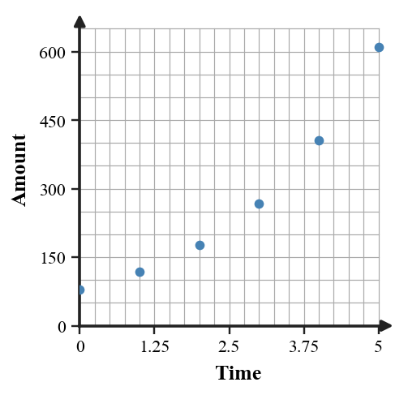
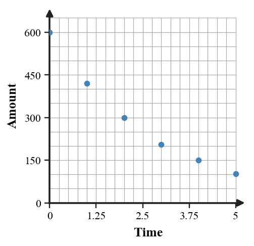

The imperfect data set is being modeled exponentially. Construct a modeling strategy.
| Week | 0 | 1 | 2 | 3 | 4 |
|---|---|---|---|---|---|
| Data | 100 | 151 | 226 | 342 | 509 |
The imperfect data set is being modeled exponentially. Construct a modeling strategy.
| Hour | 0 | 1 | 2 | 3 | 4 |
|---|---|---|---|---|---|
| Data | 500 | 360 | 258 | 188 | 132 |
The imperfect data set is being modeled exponentially. Construct a modeling strategy.
| Day | 0 | 1 | 2 | 3 | 4 |
|---|---|---|---|---|---|
| Data | 80 | 118 | 176 | 268 | 405 |
The imperfect data set is being modeled exponentially. Construct a modeling strategy.
| Time | 0 | 1 | 2 | 3 | 4 |
|---|---|---|---|---|---|
| Data | 240 | 192 | 154 | 124 | 99 |
Use the scatter plot and the table to decide whether an exponential model is reasonable. Support your decision with ratios and identify any point that does not fit the overall pattern well.

| Time | 0 | 1 | 2 | 3 | 4 | 5 |
|---|---|---|---|---|---|---|
| Amount | 80 | 118 | 176 | 268 | 405 | 610 |
Use the scatter plot and the table to decide whether an exponential model is reasonable. Support your decision with ratios and identify any point that does not fit the overall pattern well.

| Time | 0 | 1 | 2 | 3 | 4 | 5 |
|---|---|---|---|---|---|---|
| Amount | 600 | 420 | 300 | 205 | 150 | 103 |
A model from two data points gives $P(t)=200(1.5)^t$. Another student suggests $P(t)=200+100t$ because the first increase is $100$. Compare both models at $t=0,1,2,3$ and explain which model better matches repeated percent change.
A model from two data points gives $A(t)=120(0.8)^t$. Another student suggests $A(t)=120-24t$ because the first decrease is $24$. Compare both models at $t=0,1,2,3$ and explain which model better matches repeated percent change.